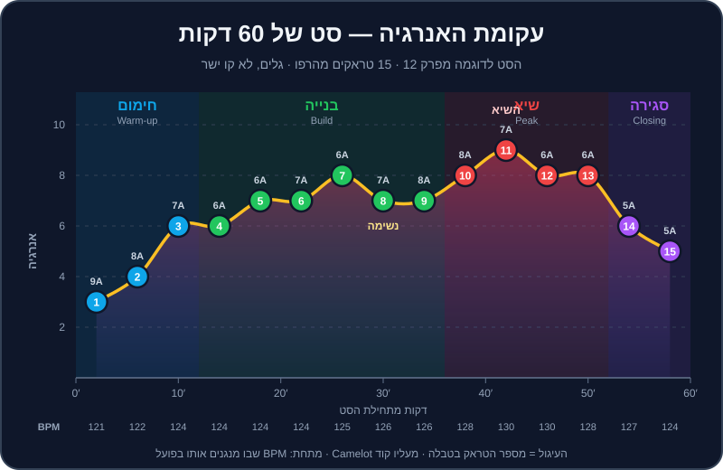

פרק 12 מתוך 20
בניית סט
Set Building
מאוסף מעברים לסיפור שלם: עקומת אנרגיה, תפקידי חימום-בנייה-שיא-סגירה, קריאת קהל, הכנה מול אלתור, ארגון הספרייה ב-Rekordbox — וסט לדוגמה של 60 דקות שבנוי כולו מהטראקים של הרפו, עם הוראות לכל מעבר.
אפשר לעשות עשרה מעברים מושלמים ברצף — ועדיין לנגן סט משעמם. כי סט הוא לא רשימה של מעברים, אלא סיפור: יש לו פתיחה שמזמינה פנימה, בנייה שמגבירה ציפייה, שיא שמשחרר, ורגעי נשימה שנותנים לשיא להרגיש כמו שיא. ה-DJs שאתם הכי אוהבים לא בהכרח עושים מעברים טובים יותר מכם בעוד שנה — הם פשוט יודעים מה לנגן אחרי מה, ומתי.
בפרק הזה נלמד לחשוב כמו מספרי סיפורים: לתכנן עקומת אנרגיה, להבין את התפקיד של כל חלק בערב, לקרוא את הקהל, ולארגן את הספרייה כך שהשיר הבא תמיד יחכה לכם. ובסוף — סט מלא של 60 דקות מהטראקים של DJ Lab, עם הוראות לכל מעבר.
מה תלמדו בפרק#
- מה זו "אנרגיה" של טראק, ואיך מדרגים אותה מ-1 עד 10.
- עקומת אנרגיה: למה גלים עדיפים על קו ישר.
- התפקידים בערב:
warmup,build,peak,closing— ומה האחריות של כל אחד. - קריאת קהל: סימנים, תגובות, וכלל "שלוש הדלתות".
- הכנה מול אלתור: כמה לתכנן, ואיך לארגן קרייטים ופלייליסטים ב-Rekordbox.
- סט של 60 דקות מהרפו, טראק אחר טראק, עם ספירת תיבות לכל מעבר.
מה זו "אנרגיה"?#
אנרגיה היא לא רק BPM. טראק טכנו ב-128 יכול להיות עדין יותר מטראק רגאטון ב-95. האנרגיה היא שילוב של עוצמת הקיק והבאס, צפיפות הכלים, אגרסיביות הסאונד, כמה "מתח" יש בבילד-אפים, ועד כמה הטראק מוכר לקהל.
ב-DJ Lab כל טראק מתויג ב-energy מ-1 עד 10 (בשדה energy בקובץ ה-JSON ובהערה בתוך ה-MP3). הנה הסקאלה שלנו:
| אנרגיה | איך זה מרגיש | איפה בערב | דוגמאות מהרפו |
|---|---|---|---|
| 1-2 | רקע, נושם, אפשר לדבר מעליו | קבלת פנים, אפטר | breadth-10 (לו-פיי) |
| 3-4 | חם, מזמין, מנענעים ראש | תחילת חימום | house-02, house-01 |
| 5-6 | גרוב שמזיז רגליים, עוד לא "משתחררים" | סוף חימום, בנייה | house-10, house-03, techno-08 |
| 7-8 | רחבה מלאה, ידיים למעלה מדי פעם | בנייה מאוחרת, שיא | house-05, mainstream-16, techno-01 |
| 9-10 | פיצוץ, צעקות, "הרגע של הערב" | שיא — במנות קטנות | techno-03, mainstream-01, techno-11 |
עקומת האנרגיה#

שלושה עקרונות:
- מתחילים נמוך יותר ממה שנראה לכם. אם תפתחו ב-8, לאן תלכו משם?
- עולים בגלים, לא בקו ישר. שניים למעלה, אחד למטה. ה"ירידה" הקטנה היא מה שגורם לעלייה הבאה להרגיש חזקה. בתרשים — שימו לב לטראק 8: נשימה קצרה לפני השיא.
- השיא קצר. 10-15 דקות של 9-10 זה הרבה. אחרי זה האוזניים והרגליים מתעייפות.
ומה עם BPM?#
הטמפו הוא חלק מהסיפור, אבל הוא זז לאט. כלל אצבע לסט קלאב: עד 2-3 BPM בכל מעבר, ולא יותר מ-8-10 BPM בשעה. בסט לדוגמה בהמשך הטמפו עולה מ-121 ל-130 בתוך 40 דקות, וחוזר ל-124 בסגירה. קפיצות גדולות יותר — עם הטכניקות של פרק 15.
התפקידים בערב#
| תפקיד | מטרה | אנרגיה טיפוסית | מה לא לעשות |
|---|---|---|---|
warmup — חימום |
להכניס אנשים לרחבה, לבנות אמון, "לחמם את החדר" | 3-6 | לא לנגן את הלהיטים הגדולים, לא "לגנוב" את השיא של מי שבא אחריכם |
build — בנייה |
להעלות אנרגיה בהדרגה, לבנות ציפייה | 5-8 | לא לקפוץ לשיא מוקדם מדי |
peak — שיא |
הרגעים הגדולים של הערב | 7-10 | לא להחזיק 10 לאורך שעה |
closing — סגירה |
לסיים עם טעם טוב, "לשחרר" את הקהל הביתה | יורד מ-8 ל-4, או שיא אחרון ואז ירידה | לא לנתק פתאום |
ב-tracklist.plan.json כל טראק מתויג גם ב-role. זה התפקיד ה"טבעי" שלו, אבל לא חוק: house-11 מתויג peak, ובסט שלנו הוא משמש כטראק בנייה — כי בסט של שעה, ה-peak של אפרו האוס הוא עדיין רק אמצע הדרך לטכנו.
קריאת הקהל#
מה מסתכלים#
| סימן | מה הוא אומר | מה עושים |
|---|---|---|
| ראשים מנענעים, רגליים כמעט לא זזות | אוהבים, אבל עוד לא "בפנים" | ממשיכים לבנות לאט, גרוב יציב |
| רחבה מלאה, ידיים למעלה בדרופים | אתם בשיא — מצוין | עוד 2-3 טראקים, ואז נשימה |
| אנשים יוצאים לבר בגלים | עייפות או שעמום | שינוי: ז'אנר, ווקאל מוכר, או נשימה מכוונת |
| טלפונים בחוץ, מצלמים | רגע חזק! | אל תחתכו אותו מוקדם |
| טלפונים בחוץ, מסמסים | איבדתם אותם | שינוי מהיר — ווקאל, להיט, מעבר ז'אנר |
| אנשים עומדים ליד ה-DJ ומבקשים שירים | הקהל רוצה משהו אחר ממה שאתם מנגנים | הקשיבו — זה מידע, גם אם לא תנגנו בדיוק את הבקשה |
כלל שלוש הדלתות#
בכל רגע בסט, כשטראק מנגן, דעו שלוש אפשרויות לשיר הבא:
- דלת למעלה — טראק עם קצת יותר אנרגיה (או +1/+2 בגלגל Camelot).
- דלת ישרה — באותה אנרגיה, להמשיך את מה שעובד.
- דלת למטה — טראק שנותן נשימה, או משנה כיוון.
כשהקהל מגיב — אתם בוחרים דלת. ככה אתם אף פעם לא "תקועים", ואף פעם לא מחפשים בבהלה בספרייה כשנשארו 30 שניות לטראק.
הכנה מול אלתור#
יש שני קצוות: DJ שמתכנן כל טראק מראש (ומתעלם מהקהל), ו-DJ שמגיע עם 5,000 שירים ובלי שום תוכנית (ומתבלבל). התשובה הנכונה באמצע.
שיטת 70/30#
- הכינו פלייליסט של בערך פי 2-3 טראקים ממה שתנגנו. לסט של שעה (12-16 טראקים) — 30-40 מועמדים.
- תכננו את 3 הטראקים הראשונים בדיוק. זה מרגיע את הלחץ של ההתחלה.
- סמנו 3-5 "עוגנים" — טראקים שאתם בטוחים שתנגנו (הפתיחה, השיא, הסיום).
- הכינו זוגות — מעברים שתרגלתם ואתם יודעים שעובדים.
- את השאר — מאלתרים לפי הקהל, עם כלל שלוש הדלתות.
ארגון ב-Rekordbox#
כללי אצבע לרצף טוב#
- טמפו: עד 2-3 BPM לכל מעבר. "רכבו" על הטמפו בהדרגה לאורך טראק, לא בבת אחת.
- סולם: רוב המעברים — מהלכים בטוחים (ראו פרק 10). מדי פעם +2 כדי להרים.
- ז'אנר: מעבר בין ז'אנרים דרך "גשר" — טראק שיש בו קצת משניהם (למשל מלודיק טכנו ב-124 בין האוס לטכנו).
- ווקאל: לסירוגין. שלושה טראקים ווקאליים ברצף מעייפים; אף אחד — יבש.
- ברייקדאונים: אל תחברו ברייקדאון ארוך לברייקדאון ארוך — הרחבה "נופלת".
- פרייזים: מעברים בגבולות של 16 או 32 תיבות. המבנה של הטראקים שלנו בנוי בדיוק לזה.
כמה טראקים בשעה?#
| סוג סט | זמן ממוצע לטראק | טראקים בשעה |
|---|---|---|
| טכנו / מלודיק / היפנוטי | 5-7 דקות | 9-12 |
| האוס / טק האוס / אפרו | 4-5 דקות | 12-15 |
| הסט לדוגמה בפרק הזה | כ-4 דקות | 15 |
| ביג רום / EDM | 2.5-3.5 דקות | 17-24 |
| Open Format (חתונות, היפ-הופ, ים-תיכוני) | 1.5-3 דקות | 20-40 |
הסט לדוגמה: "מגג ביפו למחסן בפלורנטין" — 60 דקות#
סט קלאב שעולה מדיפ האוס של שקיעה, דרך האוס, אפרו וים-תיכוני, לטק האוס וטכנו — וחוזר לנחיתה רכה. נבנה רק מהטראקים של הרפו, לפי BPM, Camelot ואנרגיה מתוך music/tracklist.plan.json. כל המעברים הם מהלכים בטוחים בגלגל (אותו סולם או ±1).
| # | דקה | טראק | ז'אנר | BPM מקורי | BPM בפועל | Camelot | אנרגיה | תפקיד בסט |
|---|---|---|---|---|---|---|---|---|
| 1 | 0:00 | house-02 Velvet Rooftop | Deep House | 121 | 121 | 9A | 3 | חימום |
| 2 | 4:00 | house-01 Sunset Over Jaffa | Deep House | 122 | 122 | 8A | 4 | חימום |
| 3 | 8:00 | house-03 Hands Up Florentin | House | 124 | 124 | 7A | 6 | חימום → בנייה |
| 4 | 12:00 | house-04 Piano Saturday | House | 124 | 124 | 6A | 6 | בנייה |
| 5 | 16:00 | house-11 Spirit Dance | Afro House | 122 | 124 | 6A | 7 | בנייה |
| 6 | 20:00 | mainstream-15 Mediterranean Sunrise | Mediterranean House | 124 | 124 | 7A | 7 | בנייה |
| 7 | 24:00 | mainstream-16 Oud Club | Mediterranean House | 125 | 125 | 6A | 8 | שיא ראשון |
| 8 | 28:00 | house-06 Bassline Bandit | Tech House | 127 | 126 | 7A | 7 | נשימה |
| 9 | 32:00 | house-05 Groove Machine | Tech House | 126 | 126 | 8A | 7 | בנייה מחדש |
| 10 | 36:00 | techno-01 Concrete Pulse | Peak-Time Techno | 130 | 128 | 8A | 8 | שיא |
| 11 | 40:00 | techno-03 Strobe Ritual | Peak-Time Techno | 132 | 130 | 7A | 9 | השיא |
| 12 | 44:00 | techno-04 Night Shift | Driving Techno | 129 | 130 | 6A | 8 | שיא |
| 13 | 48:00 | house-07 Warehouse 26 | Tech House | 128 | 128 | 6A | 8 | שיא → ירידה |
| 14 | 52:00 | techno-10 Micro Groove | Minimal Techno | 127 | 127 | 5A | 6 | סגירה |
| 15 | 56:00 | house-10 Kalimba Moon | Afro House | 120 | 120 | 5A | 5 | סגירה |
"BPM בפועל" = הטמפו שבו הטראק מתנגן כשהוא הטראק הראשי. כל ההזזות קטנות מ-3.5% — עם MASTER TEMPO דולק, אף אחד לא ישמע אותן. "דקה" = בערך מתי הטראק נעשה הראשי; כל טראק מתנגן כ-4 דקות כולל החפיפות.
הוראות מעבר, זוג אחר זוג#
ההוראות מניחות את מוסכמת ה-Hot Cues שלנו: A = אינטרו, B = כניסת הבאס/גרוב, C = ברייקדאון, D = דרופ, G = אאוטרו, H = 16 תיבות לסוף.
1→2 · house-02 אל house-01 (9A→8A, 121 ו-122) — בלנד ארוך. העלו את house-01 ל-121 כדי להתאים. כש-house-02 מגיע ל-G, הפעילו את house-01 מ-A. 16 תיבות של תופים על תופים, ובתיבה 17 (house-01 ב-B) — Bass Swap. אחרי המעבר, "רכבו" לאט עם house-01 חזרה ל-122. (זה בדיוק transition-01 בכיוון ההפוך.)
2→3 · house-01 אל house-03 (8A→7A, מ-122 ל-124) — בדקות האחרונות של house-01, העלו את הטמפו בהדרגה מ-122 ל-124 (חצי BPM בכל 16 תיבות). הכניסו את house-03 מ-A בתחילת ה-G של house-01. Bass Swap בתיבה 17. זה המעבר הראשון שבו האנרגיה קופצת (4 → 6) — תנו לבאס של house-03 להיכנס בביטחון.
3→4 · house-03 אל house-04 (7A→6A, 124) — שני טראקי האוס באותו טמפו. מעבר קלאסי של 32 תיבות: מ-H של house-03 (16 תיבות לסוף) הכניסו את house-04 מ-A, וחפפו. פסנתר על פסנתר עלול להתנגש — הורידו את ה-Mid של house-03 בהדרגה כשהפסנתר של house-04 נכנס.
4→5 · house-04 אל house-11 (6A→6A, house-11 מועלה ל-124) — אותו סולם, ולכן אפשר "ללייר". הכניסו את התופים של house-11 (אפרו האוס) מתחת לאאוטרו של house-04 ותנו לשני הגרובים לחיות יחד 16 תיבות. זה רגע יפה: פרקשן אפריקאי מתחת לאקורדים של האוס.
5→6 · house-11 אל mainstream-15 (6A→7A, 124) — +1 בגלגל, הרמה עדינה. מעבר פילטר: mainstream-15 נכנס עם HPF, נפתח לאורך 16 תיבות, ובמקביל house-11 "מתרחק" עם פילטר. כשהמלודיה הים-תיכונית נכנסת — הקהל הישראלי מזהה את הצבע מיד.
6→7 · mainstream-15 אל mainstream-16 (7A→6A, מ-124 ל-125) — שני טראקי Mediterranean House. העלו את mainstream-15 ל-125 לאורך הטראק. מעבר בדרופ: חכו לברייקדאון (C) של mainstream-15, הכניסו את mainstream-16 כך שהדרופ שלו (D) ייפול בדיוק כשהברייקדאון של הראשון נגמר. זה השיא הראשון של הסט — אנרגיה 8.
7→8 · mainstream-16 אל house-06 (6A→7A, house-06 מוריד ל-126) — הנשימה. הורידו את house-06 ל-126 (−0.8%), והעלו את המאסטר בהדרגה ל-126. Bass Swap קלאסי של טק האוס בתיבה 17. האנרגיה יורדת ל-7 — זה מכוון. תנו לגרוב של הבאסליין לנשום.
8→9 · house-06 אל house-05 (7A→8A, 126) — +1, אותו ז'אנר. זה transition-02 בכיוון ההפוך: G של house-06 עם A של house-05, Bass Swap בתיבה 17. השתמשו באפקט Trans של 1/4 לתיבה אחת לפני ההחלפה, אם בא לכם תבלין.
9→10 · house-05 אל techno-01 (8A→8A, מ-126 ל-128) — מטק האוס לטכנו. בזמן house-05, "רכבו" מ-126 ל-128. הכניסו את techno-01 (מורד ל-128) מ-A, עם HPF עדין, לאורך 32 תיבות. אותו סולם — אפשר בלנד ארוך. ההבדל בין הז'אנרים מורגש בעיקר בקיק: הקיק של הטכנו "יבש" ועמוק יותר.
10→11 · techno-01 אל techno-03 (8A→7A, מ-128 ל-130) — העלו את techno-01 ל-130 לאורך הטראק (+1.5%). techno-03 (מורד ל-130) נכנס מ-A, ובתיבה 17 — Bass Swap חד. לפני הדרופ (D) של techno-03 — Roll של 1/2 ואז 1/4 לפעמה אחת. השיא של הסט.
11→12 · techno-03 אל techno-04 (7A→6A, 130) — בלנד היפנוטי ארוך של 32 תיבות. techno-04 מועלה ל-130. −1 בגלגל מרגיע מעט — האנרגיה יורדת מ-9 ל-8, אבל הרחבה עדיין בוערת.
12→13 · techno-04 אל house-07 (6A→6A, מ-130 ל-128) — חזרה לטק האוס, הפעם בשיא. הורידו בהדרגה את המאסטר מ-130 ל-128 לאורך techno-04. אותו סולם, אותו גרוב של "מחסן" — זה transition-04 הפוך, אבל כאן אפשר בלנד ולא Echo Out, כי הטמפו כבר מותאם.
13→14 · house-07 אל techno-10 (6A→5A, מ-128 ל-127) — תחילת הסגירה. −1 בגלגל, −1 BPM. מעבר פילטר LPF על house-07: הוא "שוקע" כשהגרוב המינימלי של techno-10 עולה. האנרגיה יורדת ל-6.
14→15 · techno-10 אל house-10 (5A→5A, מ-127 ל-120) — הפרידה. אותו סולם, אבל פער של 7 BPM. במקום להזיז את house-10 ב-6%, עשו Echo Out של פעמה אחת על techno-10 בסוף פרייז, ותנו ל-house-10 להתחיל מ-A בטמפו המקורי שלו, 120. הקלימבה והפרקשן של אפרו האוס סוגרים את הסט ברכות. בסוף house-10 — תנו לאאוטרו להתנגן עד הסוף, או Echo Out ארוך.
תבניות לסטים אחרים#
- חימום של 30 דקות בבר: 6-7 טראקים, אנרגיה 4 עד 7, BPM מ-116 עד 124. למשל: house-13 (7B) → house-12 (8B) → house-01 (8A) → techno-08 (8A) → mainstream-04 (8A) → techno-07 (9A). שימו לב למעבר A↔B בין house-12 ל-house-01, ולקפיצת הטמפו מ-118 ל-122 — כדאי "לרכוב" עליה לאורך house-12.
- סט שיא של שעה (אחרי מישהו אחר): מתחילים מהאנרגיה שהשאירו לכם (נניח 7), עולים ל-9-10 בדקה 30-45, ומסיימים ב-8 כדי להשאיר לבא אחריכם.
- סט Open Format לאירוע: בלוקים של 15-20 דקות לפי סגנון, מעברים קצרים — ראו פרק 14.
אחרי הסט#
- הקליטו כל סט, גם בבית (ראו פרק 16).
- האזינו למחרת, לא באותו לילה. רשמו שלושה מעברים שעבדו ושלושה לשיפור.
- בדקו את ה-
Historyב-Rekordbox — אילו טראקים ניגנתם, ובאיזה סדר. - ציירו את עקומת האנרגיה האמיתית של הסט: עלתה מהר מדי? היה שיא בכלל?
- עדכנו את הספרייה: טראק שעבד מעולה — סמנו. טראק שרוקן את הרחבה — שאלו למה.
תרגילים#
סיכום#
- סט הוא סיפור: חימום, בנייה, שיא וסגירה — בגלים, לא בקו ישר.
- אנרגיה 1-10 היא שילוב של צליל, צפיפות והיכרות, ולא רק BPM.
- כלל שלוש הדלתות: תמיד דעו מה לנגן למעלה, ישר ולמטה.
- 70/30: מכינים פי 2-3 טראקים, מתכננים פתיחה ועוגנים, ומאלתרים את השאר לפי הקהל.
- הטמפו זז לאט — עד 2-3 BPM למעבר; קפיצות גדולות עם הטכניקות של פרק 15.
- הקליטו, האזינו למחרת, ושפרו.
בפרק הבא נכיר לעומק את כל הז'אנרים שברפו ובקרייטים — מה מאפיין כל אחד, ואיך מערבבים אותו. ← פרק 13: תנ"ך הז'אנרים